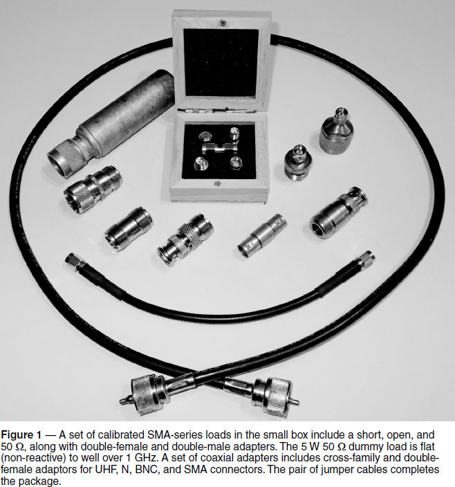
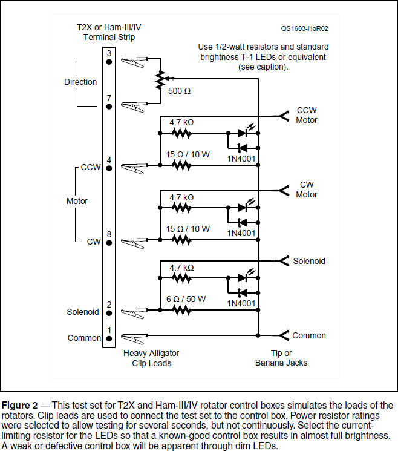

Experiment #158 — Test Sets
I have had the experience of mentoring teams of students assigned to work on a design project for an industrial client. We’d discuss the first steps of determining the customer’s requirements and writing a specification for what the design was supposed to do.
The next step was enlightening: the development of test methods. “After all,” I said, “if you don’t agree on how to test the design, how will you know when you’re done?”
Hams often just cut-and-try until it’s “close enough,” and that often works out okay if we’re just building one of something. But what happens when that one of something stops working? Or if you need to verify that a piece of equipment is working properly?
Having a test set on hand can be a huge time saver. Test sets are usually an assembly of test equipment or a custom circuit that exercises the important functions of a piece of gear. They are used for troubleshooting, pass/fail tests, and calibration.
The Dummy Load
The most common test set — the dummy load — certainly gets a lot of use. A dummy load is the test set every ham should have. It doesn’t have to be “full gallon” capacity, either. Even small dummy loads that dissipate a few watts are useful for various things like testing handhelds, mobile radios, and QRP rigs. Find one that can handle the output of your transmitter or amplifier, and make it easy to use during tuning or testing.
Checking RF Analyzers
Another use for dummy loads is checking your antenna analyzer. As the sophistication of analyzers increases, it becomes easier and easier to misconfigure them. That’s why known loads are very handy. They provide a good sanity check on your readings, if nothing else. If the analyzer is broken (or worse, erratic) a dummy load will help you decide what action is needed — none, repair, or replace.
Network and single-port vector analyzers require a set of three known loads to account for the effects of connections to the device or system being tested. The three loads are a short circuit (0 Ω), an open circuit, and the system reference impedance, usually 50 Ω, but sometimes 75 Ω. Each load is applied to the instrument in turn as part of a calibration routine, allowing the analyzer to cancel out the effects of cables, connectors, and construction. This creates what is called a reference plane, where the measurement can be made independent of cable lengths and connections.
Making these test loads is pretty straightforward at HF and low VHF frequencies. For the 0 and 50 Ω loads, just solder a jumper or 50 Ω non-inductive resistor across the appropriate connector. As frequency increases, however, parasitic effects of lead length and distributed capacitance start to become significant. If you purchase an analyzer to use above, say, 100 MHz, you should also purchase a set of calibration loads.1
Like the vector analyzer calibration loads, a test set for analyzers and low-power impedance measurement equipment is as simple as a set of known loads. Power resistors are available in TO-220 packages that have low parasitic lead inductance so they can be used into the low VHF range. A typical example is the LTO 100 series of 100 W non-inductive resistors from Vishay (explained in detail at www.vishay.com/docs/50051/lto100.pdf).
A wide range of SWR measurements can be checked with a set of resistors having values from 5 Ω (SWR of 10:1) to 50 Ω and then up to 500 Ω. With careful mounting and short leads, the impedances should be consistent up to 2 meters.
It Worked the Last Time I Used It!
One place you really need testing gear is at the hamfest flea market. Many sponsors have taken the welcome step of supplying a test table staffed by some tech-savvy hams. At the table, you’ll find a test set of basic instruments so you can check out a radio. This has saved countless dollars from being wasted on inoperative and faulty equipment. Nevertheless, you can’t be running over to the test table with every handful of resistors and roll of cable. Having some test equipment to bring along is a great investment. An inexpensive DVM with the capability to test transistors, diodes, and measure capacitance will allow you to sort through components quickly. Bring alligator clip adaptors for the DVM leads as well. A battery-powered grid or gate dip oscillator makes a dandy low-power (if drifty) signal source to see if a receiver is working.
Several basic test sets are also good accessories for the savvy buyer. Start with a low-power dummy load and a set of common coax adaptors, as shown in Figure 1. This will allow you to perform basic functionality tests on QRP and handheld transceivers. You’ll be able to use your own VHF/UHF FM handheld to listen for a signal from the radio you’re testing, too. If you include an RF peak detector that can be attached to the dummy load with a T connector, you can get an idea of how much power is being generated and whether the output power level is stable.2


Batteries and power supplies can look fine when measured with the very light load of a voltmeter. You really need to draw some current to be sure the output voltage will hold up when the battery or power supply is loaded. A 10 Ω, 10 W resistor mounted in a metal box will draw almost an amp from a 12 volt battery or power supply, testing the supply’s voltage regulator and that the battery (if at least partially charged) can still hold some charge.
A more capable test load is composed of several different resistors mounted on a single piece of scrap aluminum to act as a heatsink. Start with a 1 kΩ, 1⁄2 W resistor, which is a good choice for a light load (resistances don’t have to be exact). Then add power resistors of 100 Ω, 10 Ω, and 1 Ω, or similar values. Low resistances can draw large currents, so use banana jacks and #16 wire to handle these loads, and be careful about heating. The goal of this test set is only to provide a short go/no-go test, but hot spots can still develop. Attach a set of tip jacks to plug in the leads for your DVM and you can monitor voltage under load.
Rotator Control Box Test Set
A test set that I’ve found to be quite useful is the rotator control box test set seen in Fig- ure 2. Having a station with several T2X and Ham-III/IV rotators, there are many opportunities to use it! For testing the rotators, I have a known-good control box — no problem there. Testing the control boxes is another matter, though, so I built the rotator simulator in the figure.3
The test set schematic is quite simple: the 6 Ω resistor draws 4 to 5 amps typical of an energized brake solenoid. A pair of 15 Ω resistors draw the 2 amps typical of motors. An LED across each load resistor shows voltage through relative brightness. A 500 Ω pot is provided to exercise the metering circuit. A set of heavy-duty alligator clips let me clip to the terminal strip very quickly and tip jacks let me connect a voltmeter. Using this test set, I can quickly tell if a control box is working or not, whether on a hamfest table or at the top of a tower.
Your Test Set
What do you need to test around your station? Is it a special power supply or battery charger? Do you need to calibrate an RF measurement tool? Maybe something to check continuity on that growing box of data cables? Whatever the need, building a dedicated test set will save time and headaches over and over.
Notes
1The process of calibrating a small vector analyzers is demonstrated in the YouTube video “Vector Network Analyzer’s Calibration Tutorial,” by LA Techniques Ltd, at https://www.youtube.com/watch?v=lqo3oV2RtlA.
2See Experiment #140, “RF Measuring Tools.” All previous “Hands-On Radio” columns are available to ARRL members at www.arrl.org/hands-on-radio.
3Manuals in PDF format are available for download from Hy-Gain at http://www.hy-gain.com/Categories.php?sub=0&ref=64. Open the rotator model web page and look for the “[model] Downloads” link.